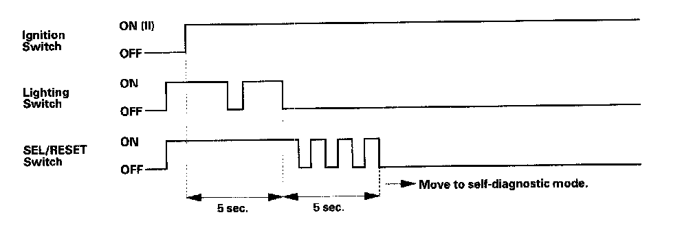
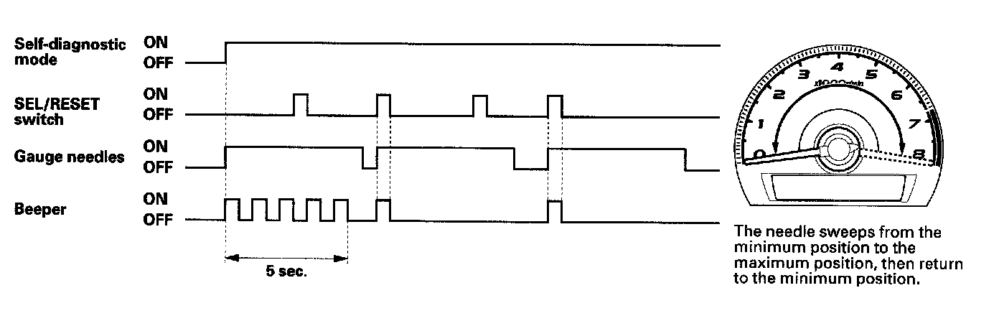
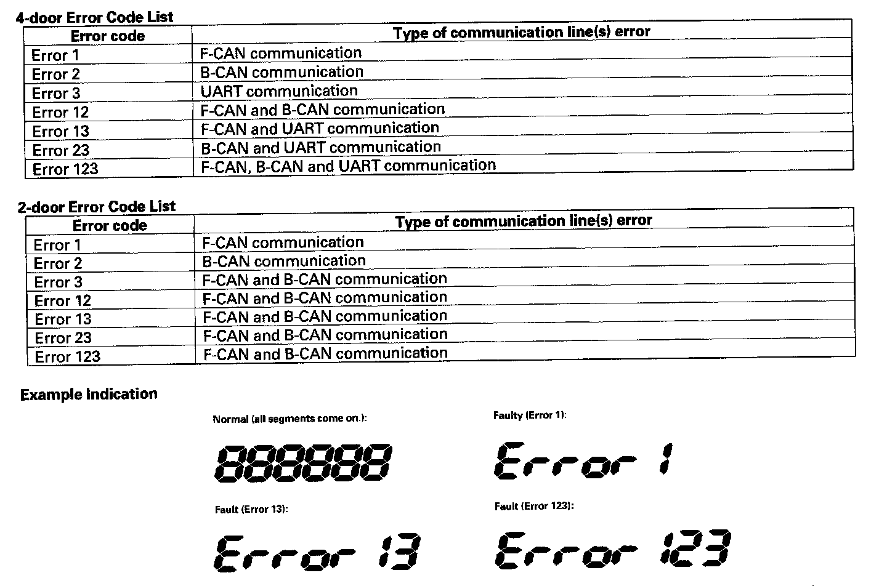

Initial Inspection and Diagnostic Overview
Self-diagnostic FunctionBefore troubleshooting the gauge system, refer to multiplex integrated control system B-CAN System Diagnosis Test Mode A. Troubleshooting - B-CAN System Diagnosis Test Mode A
The gauge control module (tach) has a self-diagnostic function shown, and also has a customizable reset function.
- The beeper drive circuit check.
- The indicator drive circuit check.
- The switch input test.
- The LCD segments check.
- 4-door: The gauges drive circuit check (Tachometer, Fuel gauge, Coolant temperature gauge).
- 2-door: The self-diagnostic function does not operate the Fuel gauge and Coolant temperature gauge.
- The communication line check (or the body-controller area network (B-CAN) communication line and the fast controller area network (F-CAN) communication line between the gauges).
NOTE: Indicators are also controlled via the communication line.
Entering the self-diagnostic function with the HDS
4-door: Using the HDS, select Body Electrical, Gauges, then Function Test and do the self-diagnostic Function.
2-door: Use the manual method.

Entering the self-diagnostic function (manual method)
Before doing the self-diagnostic function, check the No. 10 (7.5 A) fuse in the under-dash fuse/relay box and the No. 23 (10 A) fuse in the under-hood fuse/relay box.
1. Push and hold the SEL/RESET switch button.
2. Turn the headlights ON.
3. Turn the ignition switch ON (II).
4. Within 5 sec., turn the headlights OFF, then ON and OFF again.
5. Within 5 sec., release the SEL/RESET switch button, and then push and release the button three times repeatedly.
NOTE:
- While in the self-diagnostic mode, the dash lights brightness controller operates normally.
- While in the self-diagnostic mode, the SEL/RESET button is used to start the Beeper Drive Circuit Test and the Gauge Drive Circuit Check.
- If the vehicle speed exceeds 1.2 mph (2 km/h) or the ignition switch is turned OFF, the self-diagnostic mode ends.
The Indicator Drive Circuit Check
When entering the self-diagnostic mode, the following indicators blink:
ABS indicator, A/T gear position indicator, brake system indicator, charging system indicator, cruise control indicator, cruise indicator, door indicator, DRL indicator, high beam indicator, immobilizer indicator, lights-on indicator, low fuel indicator, malfunction indicator lamp (MIL), oil pressure indicator, Seat belt indicator, security indicator, side airbag off indicator, smart maintenance indicator, SRS indicator, trunk indicator, and washer fluid level indicator (Canada models).
Switch Input Check
At the initial stage of the self-diagnostic function, the beep sounds intermittently, the beeper sounds continuously when any of the following switch inputs are switched from OFF to ON:
Cruise control master, SET, RESUME, CANCEL switches, SEL/RESET switch, mph-km/h switch, illumination volume (+), (-) switch, parking brake switch, and VSA OFF switch.
The Beeper Drive Circuit Check
When entering the self-diagnostic mode, the beeper sounds five times.
The LCD Segment Check
4-door: When entering the self-diagnostic mode, all the segments blink five times.
2-door: Self-diagnostic function does not operate the Fuel gauge and Coolant temperature gauge.

The Gauge Drive Circuit Check
When entering the self-diagnostic mode, the tachometer, needle sweeps from the minimum position to maximum position, then returns to the minimum position.
NOTE: After the beeper stops sounding and the gauge needle returns to the minimum position, pushing the SEL/RESET switch starts the Beeper Drive Circuit Check (one beep) and the Gauge Drive Circuit Check again. The check cannot be started again until the gauge needle returns to the minimum position.
If the needle fails to sweep, or the beeper does not sound, replace the gauge control module (tach).

The Communication Line Check
While in the self-diagnostic mode, the Communication Line Check starts after the LCD Segments Check. If all segments come on, the communication line is OK. If faulty, the word "Error" will be indicated on the odometer display followed by number(s).
- If the word "Error 1" is indicated, there is a malfunction in the communication line between the gauge control module (tach) and the fast-controller area network (F-CAN). Check for DTCs in the ECM/PCM and troubleshoot any DTCs found. If no DTCs are found, go to indicated troubleshooting.
- If the word "Error 2" is indicated, there is a malfunction in the communication line between the gauge control module (tach) and the body-controller area network (B-CAN). Go to indicated troubleshooting (B1155 to B1160).
- 4-door: the word "Error 3" is indicated, there is a malfunction in the UART communication line between the gauge control module (tach) and the gauge control module (speedo). Go to the gauge control module (tach) input test and check the No. 20 terminal. If the wire harness is OK, substitute a known-good gauge control module (speedo) and recheck.
If any F-CAN or B-CAN communication line errors are found, go to DTC check using HDS.
Ending the self-diagnostic function
Turn the ignition switch OFF.
NOTE: If the vehicle speed exceeds 1.2 mph (2 km/h), the self-diagnostic function ends.